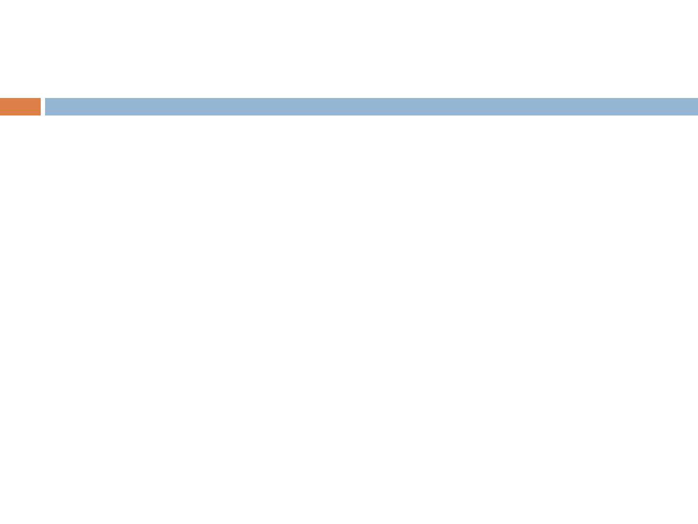
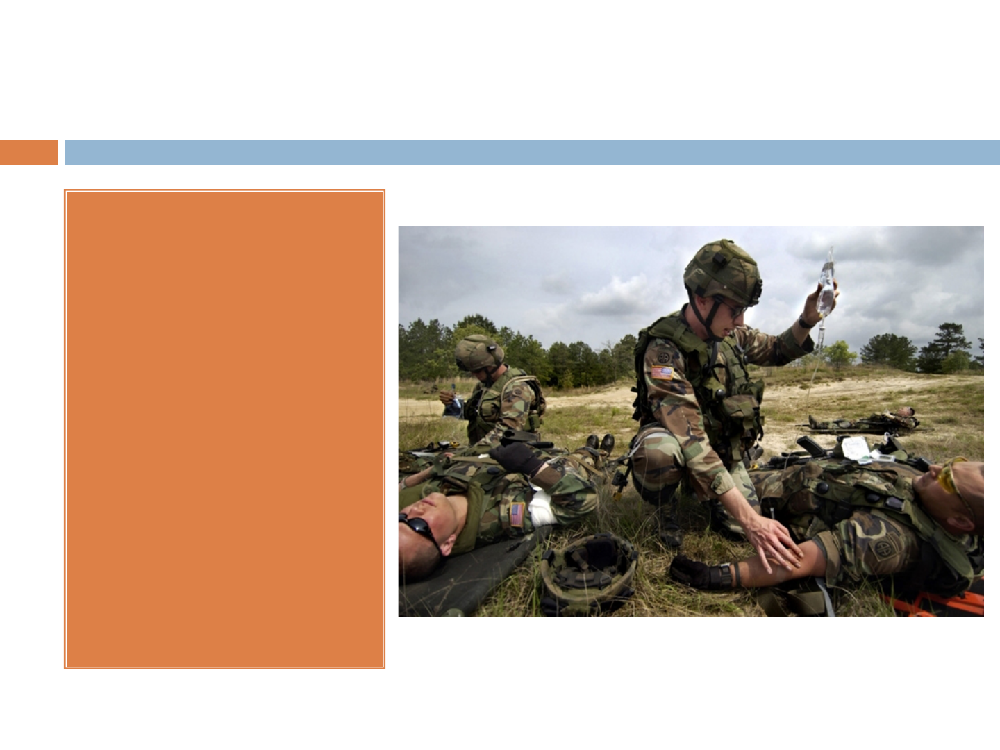
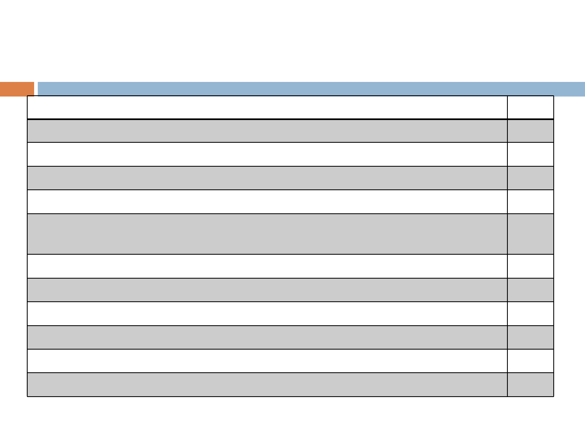
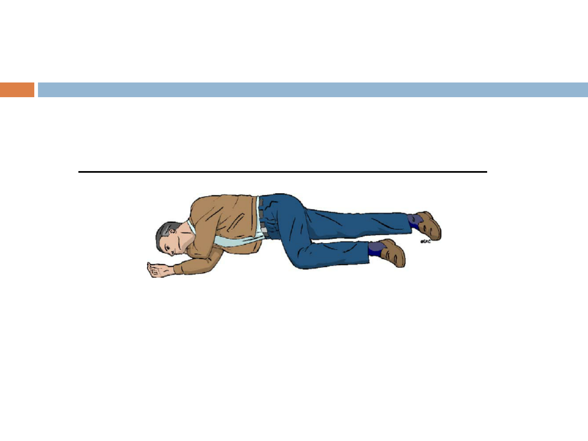
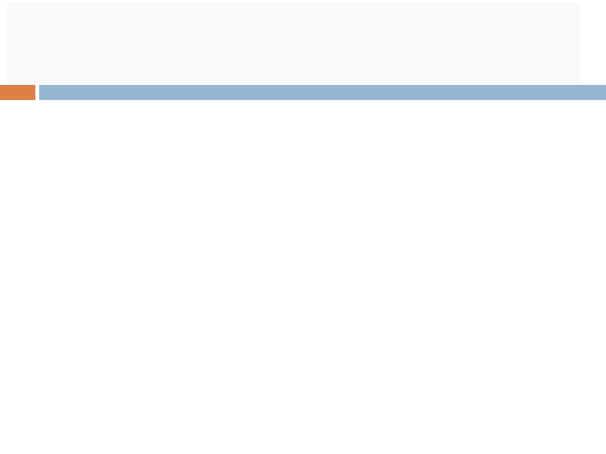

ХАРКІВСЬКИЙ
НАЦІОНАЛЬНИЙУНІВЕРСИТЕТ
ІМЕНІВ.Н.КАРАЗІНА
МЕДИЧНИЙ ФАКУЛЬТЕТ
КАФЕДРА СІМЕЙНОЇ МЕДИЦИНИ
ДОМЕДИЧНА ДОПОМОГА В ЕКСТРЕМАЛЬНИХ СИТУАЦІЯХ
К. МЕД. Н. ЛИТВИН О. І.
ДОМЕДИЧНА ДОПОМОГА В
ЕКСТРЕМАЛЬНИХ І БОЙОВИХ
УМОВАХ.
ПЕРВИННИЙ ОГЛЯД
ПОСТРАЖДАЛОГО.

ДОМЕДИЧНА ДОПОМОГА В
ЕКСТРЕМАЛЬНИХ СИТУАЦІЯХ
ДОМЕДИЧНА ДОПОМОГА В
ЕКСТРЕМАЛЬНИХ СИТУАЦІЯХ - невідкладні
дії та організаційні заходи, спрямовані на
порятунок та збереження життя людини у
невідкладному стані та мінімізацію наслідків
такого стану на здоров'я

Завдання домедичної допомоги:
1. По можливості усунути патологічний вплив
2. Ефективне тимчасове штучне заміщення або
управління функціями життєво важливих
органів та систем організму (наприклад,
штучна вентиляція легень, непрямий масаж
серця)
3. Швидке транспортування для/або
забезпечення кваліфікованої медичної
допомоги

Конституція України, 1996 (ст. 3, 16, 49, 50, 106, 138).
«Людина, її життя та здоров'я, честь та гідність,
недоторканність та безпека визнаються в Україні найвищою
соціальною цінністю».
Стаття 3 Конституції України
Закон України "Основи законодавства України про охорону
здоров'я, 1992", (ст.37).
Закон України "Про екстрену медичну допомогу", від
05.07.2012 р. №5081-VI.
Правові аспекти надання домедичної
допомоги

Огляд місця події. Безпека.
Опинившись на місці події, необхідно правильно
оцінити ситуацію та визначити, чи зможете ви надати
домедичну допомогу
Якщо аварія пов'язана з пожежею, хімічним
зараженням (і подібними ситуаціями, що загрожують
небезпекою для всіх оточуючих), від надання
домедичної допомоги треба відмовитися - ви
ризикуєте стати постраждалим
Оцінити фактори небезпеки для вас та оточуючих – чи
зможете ви надати допомогу постраждалим у даному
місці або для цього їх необхідно буде перемістити

Огляд місця події. Медичне сортування. Алгоритм
«КОЛЕСО». Визначення рівня свідомості за
шкалою AVРU
Важливо також "відсортувати" постраждалих, порахувати їх кількість, визначити ступінь
травмування та насамперед надавати допомогу тим, хто мовчить та перебуває у
несвідомому стані
для полегшення процесу сортування та надання першої допомоги на базі стандартів НАТО
було створено Український алгоритм та протокол з домедичної медицини «КОЛЕСО»:
К (Кровотечі масивні, критичні)
О (Огляд дихальних шляхів)
Л (Легені)
Е (Ефективність дихання)
С (Серце)
О (Огляд всього тіла - оцінка свідомості -Обігрів)
Визначення рівня свідомості за шкалою AVРU:
A – пацієнт у свідомості
V - є реакція на голос
P – є реакція на біль
U – не реагує

Домедична допомога в бойових
умовах
Пошкодження, що
виникають у
сучасних
збройних
протистояннях,
значно
обмежують час
надання
долікарської
допомоги на полі
бою

Найнебезпечніші ураження в бойових
умовах - зупинка серця, непрохідність
верхніх дихальних шляхів
При раптовій зупинці серця внаслідок ударної хвилі,
закритої травми грудної клітки, сильного стресу смерть
настає через 5 хв.
Причини смерті - зупинка діяльності серця і, як наслідок,
припинення транспортування кисню до клітин.
При виникненні непрохідності верхніх дихальних
шляхів через запад язика в умовах втрати свідомості
(травма голови, шок) у положенні на спині поранений
гине до 5 хв.
Причина смерті – зупинка серця внаслідок недостатнього
надходження кисню

Найнебезпечніші ураження в
бойових умовах - кровотечі
При кровотечі із магістральних судин кінцівок
(стегнова, плечова артерії), поранений гине до 2 хв.
(локалізація рани – ділянка плеча (пахвова ямка)
або стегна (пахвинна ділянка)).
Причина смерті – швидка втрата значної кількості
крові.
При кровотечі із судин шиї (сонна артерія, яремна
вена) смерть настає також до 2 хв. (Локалізація
рани- Ділянка шиї).
Причини смерті – швидка втрата значної кількості
крові, засмоктування повітря у великі вени та
закупорка ним судин.

Найнебезпечніші ураження в
бойових умовах - кровотечі
При кровотечі із судин голови поранений може
загинути від кількох секунд до однієї години
(локалізація рани – волосиста частина голови).
Причини смерті – швидка втрата значної кількості
крові, засмоктування повітря у великі вени та
закупорка ним судин.
При зовнішній артеріальній кровотечі з ран
передпліччя, гомілки або тулуба смерть може
наступити до однієї години.
Причини смерті – швидка втрата значної кількості
крові, розвиток шоку.
Найнебезпечніші ураження в
бойових умовах- поранення грудної
клітини
При пораненні грудної клітки смерть настає від
10-15 хв. до однієї години
Причини смерті - виключення легень з боку
поранення з акту дихання, втрата значної
кількості крові.

Засоби індивідуальні домедичної допомоги
1. Засіб для зупинки кровотечі механічний - джгут 1 од.
2. Засіби для зупинки кровотечі хімічні – Сel+x
1 од.
3. Засіб для зупинки кровотечі хімічний - Petroleum Gauze
1 од.
4. Анальгетик у шприц-тюбику (або в автоінжекторів) 1 од.
5. Назофарингеальний повітропровід 1 од.
6. Антибактеріальні засоби в таблетках, що містять амоксицилін з
клавулоновою кислотою
1 уп.
7. Механічний засіб для розрізання одягу та взуття 1 од.
8. Рукавички медичні оглядові 1 од.
9. Маркер синиій 1 од.
10. Пластир армований 1 од.
11. Оклюзійна самоклеюча плівка 1 уп.
12. Футляр або сумка (з поясним кріпленням або на ремені) 1 од.

Обсяг долікарської допомоги в
секторі обстрілу
1. поворот із положення на спині в
стабільне бокове положення:
2. тимчасова зупинка зовнішньої
кровотечі (шия, кінцівки)

визначення ознак життя
швидке обстеження з ніг до голови (пошук наявних
пошкоджень)
при необхідності – тимчасова зупинка кровотечі
(голова, тулуб)
серцево-легенева реанімація
накладання пов'язок на рани кінцівки та тулуба,
фіксація переломів та шийного відділу хребта
підготовка до транспортування пораненого у
безпечну зону
Обсягдолікарськоїдопомогив
секторіукриття – первинний огляд

Наданнядолікарськоїдопомогив
секторіукриття - вторинний огляд
1. Якщо поранення грудної клітки є, треба закрити усі рани герметичною
пов'язкою.
2. Якщо поранений непритомний, або з травмою особи, або опіками, то
треба забезпечити прохідність дихальних шляхів - постав
назофарингеальний повітропровід.
3. Повний огляд пораненого (з голови до п'ят) та прояви інших поранень.
При їх наявності – накладання пов'язки.
4. Тампонада рани на кінцівки, накладання пов’язки, що давить,
ослаблення джгута.
5. При відновленні кровотечі - накладення чи затягування джгута з
врахуванням часу його первинного накладання.
6. Знеболювальне та антибактеріальні засоби.
7. Знерухомлення переломів і поранених кінцівкок, зафіксувавши два
суміжні суглоби.
8. Перевод пораненого у стабільне бічне положення.